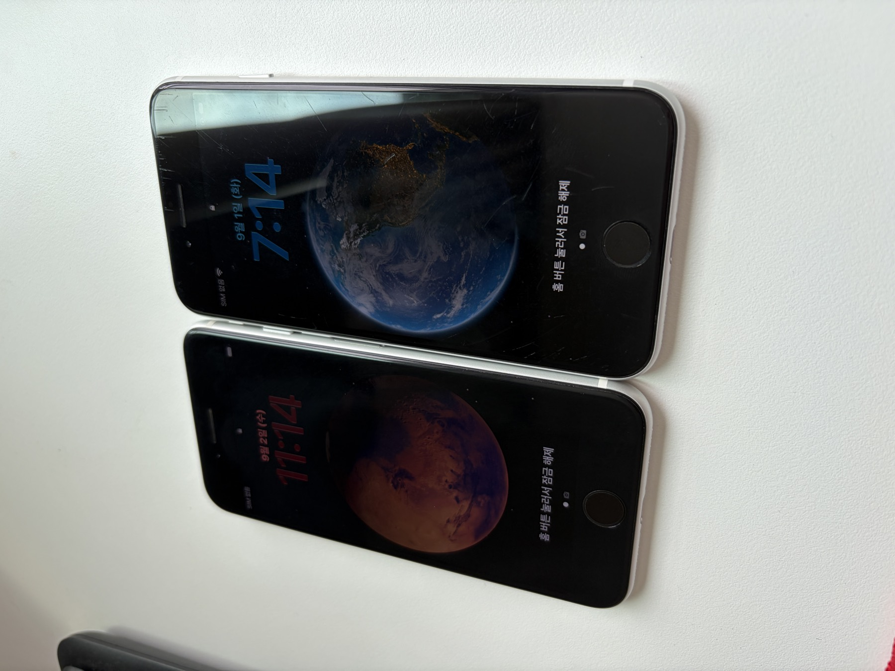
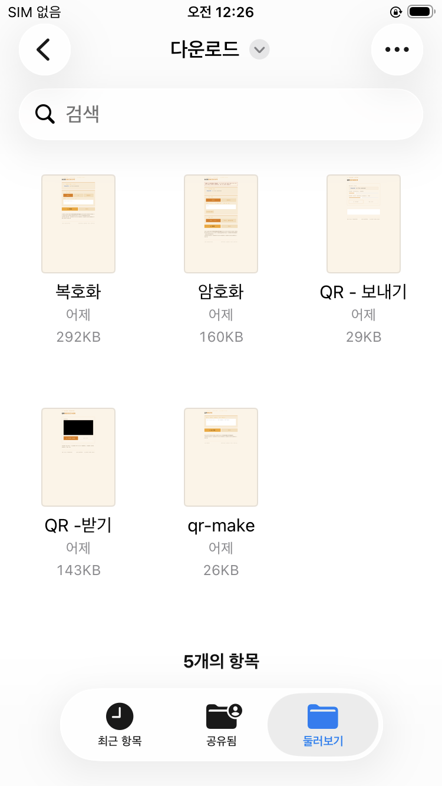
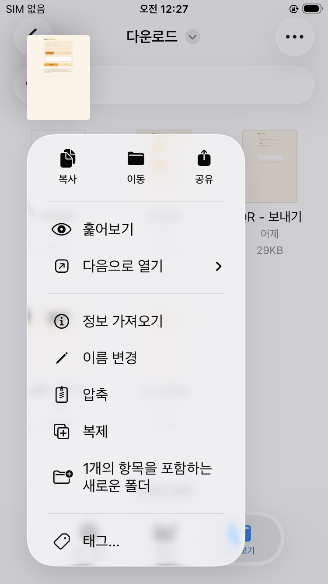
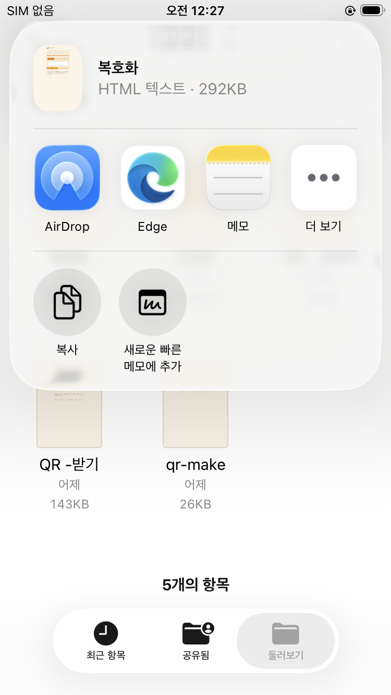

서명용 아이폰은 오프라인에서도 다 구동된다고 믿고 있었다. 그런데 알고 보니 그게 장기적으로 보장되는 게 아니라 단기적으로만 되는 거였다. 뒤늦게 이 사실을 깨닫고 대대적인 수정에 들어갔다.
비행기 모드로 전환해서 다시 테스트해봤다. age-decrypt.html에 넣어둔 QR 스캔 기능 — 개인키나 암호문구가 담긴 QR을 카메라로 읽어서 자동으로 판별해주는 기능인데, 결과는 카메라가 아예 뜨질 않았다.

1차 시도: 읽기목록
사파리 "읽기목록에 추가"로 저장해봤다. 이 방식은 백그라운드에서 앱을 완전히 지워버려도 다시 열면 페이지는 멀쩡하게 떴다. 그런데 카메라는 여전히 안 열렸다.
알고 보니 읽기목록은 "진짜 사이트"가 아니라 오프라인 스냅샷(저장된 사본)으로 취급된다. 그래서 카메라 같은 민감한 기능은 애초에 허용이 안 되는 구조였다.
2차 시도: 홈 화면에 추가
이번엔 홈 화면에 아이콘으로 저장해봤다. 이건 카메라가 정상적으로 켜졌다. 됐다 싶었는데, 문제는 다른 데 있었다.
앱 스위처에서 위로 스와이프해서 완전히 꺼버리면, 그다음부턴 오프라인 상태에서 다시 열리지가 않았다. 세션이 살아있는 동안만 되는 반쪽짜리 해결책이었던 거다. 시간이 지나면 결국 iOS가 알아서 그 세션을 정리해버릴 테니, 장기적으로 믿을 수 있는 방법은 아니었다.
그럼 아예 앱으로 만들어버려?
진지하게 고민했다. 근데 알아보니 개인용으로 무료 사이드로드하면 7일마다 맥에 케이블로 연결해서 재설치해줘야 했다. 와이파이나 블루투스를 다 끊어놔도 소용없었다 — 이 만료는 서버랑 통신해서 확인하는 게 아니라 폰 자체 시계로 판단하는 거라, 완전히 오프라인이어도 그대로 잠긴다. 그렇다고 이거 하나 때문에 연 99달러씩 내자니 그것도 아까웠다.
3차 시도: 파일 자체를 옮겨보자
발상을 바꿔서, 아예 HTML 파일 자체를 아이폰 안으로 옮겨보기로 했다. 맥에서 에어드롭으로 파일 앱에 보냈다. 그런데 그 파일을 사파리로 열려고 하니 "사용할 수 있는 앱이 없음"이라는 메시지만 떴다. 사파리는 로컬 파일을 직접 열어주는 기능 자체가 없었다.
4차 시도: 브레이브
혹시나 해서 브레이브를 깔아봤다. 결과는 똑같았다 — 파일 앱에서 브레이브로 열기 자체가 목록에 안 떴다. 나중에 찾아보니 브레이브는 아이폰에서 로컬 파일을 여는 기능이 아예 없다고 공식적으로 밝혀져 있었다.
5차 시도: 엣지 — 드디어
마지막으로 마이크로소프트 엣지를 깔아봤다. 파일 앱에서 그 HTML 파일 공유 버튼을 눌렀다.



공유버튼을 누르니 엣지가 뜬다. 드디어 희망이 보이는 순간. 감동의 물결이 쓰나미처럼 몰려왔다.
열어보니 페이지가 제대로 렌더링됐고, QR 스캔 버튼을 눌렀더니 — 카메라 화면이 떴다.
완전 비행기 모드, 완전 오프라인 상태에서 카메라가 정상적으로 켜지는 걸 확인한 순간이었다.
같은 방식으로 나머지 페이지들도 확인했다. 암호화, QR 보내기, QR 받기, QR 생성까지 전부 같은 방법으로 오프라인에서 정상 작동한다. (PSBT 잔돈검증기는 파일이 여러 개로 나뉘어 있는 구조라 이번엔 확인을 보류했다.)
돌아보니 아찔하다
만약 이 확인 작업을 먼저 안 하고 서명용 아이폰을 진짜 에어갭으로 만들어버렸으면 — 와이파이, 블루투스, 마이크, 스피커 다 뜯어내고 나서야 이 사실을 알았을 거다. 그 시점엔 이미 손쓸 방법이 없었을 거고, 결국 카메라 기능 자체를 통째로 못 쓰는 반쪽짜리 기기가 됐을 거다. 미리 확인해두길 정말 잘했다.
결론: 오프라인 환경에서 카메라 같은 기능을 쓰려면 사파리보다 엣지가 로컬 파일을 훨씬 잘 다룬다. 그리고 뭘 만들든 "에어갭으로 굳히기 전에" 반드시 오프라인 상태로 먼저 테스트해봐야 한다는 교훈을 얻었다.